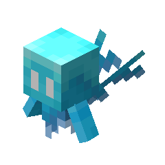
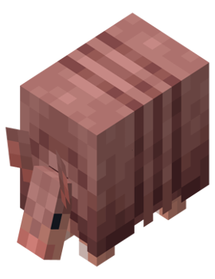
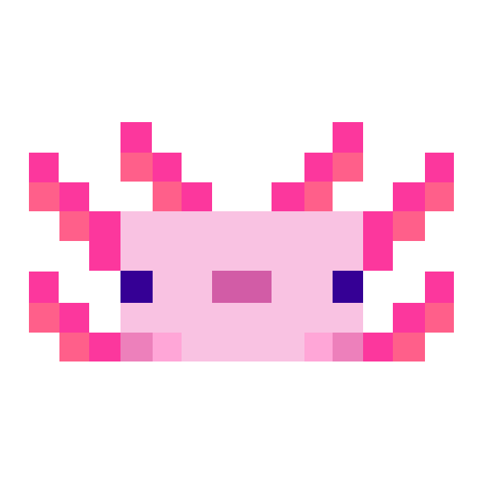
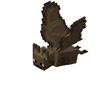
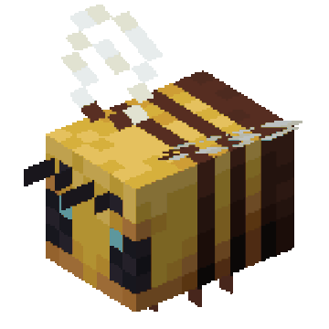
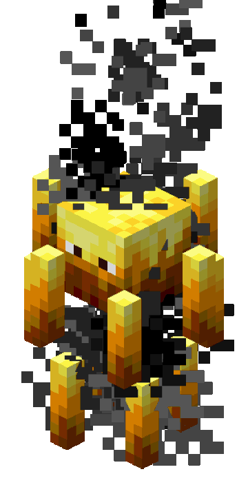
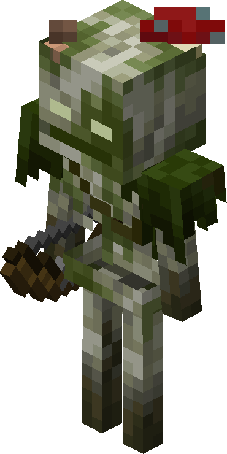

An allay is a flying passive mob that collects and delivers items for any player that gives it something or any note block it hears recently playing. It is considered a positive counterpart to the vex.
The allay has a health of 10 hearts.

An armadillo is a passive mob found in badlands and savannas. It rolls up in response to being hurt or being near undead mobs or players that are sprinting or mounted. While in this state, it takes less damage. It also repels spiders and cave spiders away from it.
The armadillo has a health of 6 hearts.

An axolotl is a passive bucketable aquatic mob found in lush caves. Axolotls attack fish, squid, drowned, and guardians; this makes axolotls useful for assisting with aquatic combat. Axolotls grant players Regeneration.
The axolotl has a health of 7 hearts.

A bat is a flying ambient passive mob that spawns in dark areas underground in caves.
The bat has a health of 3 hearts.

Bees are flying neutral mobs that live in bee nests and beehives. Bees pollinate flowers and, when they do, add honey to their home when they return to it. When full, bee nests or beehives can be harvested with shears for honeycombs or glass bottles for honey bottles.
The bee has a health of 5 hearts.

A blaze is a hostile mob that spawns in nether fortresses and is the only source of blaze rods. Blazes attack at range by firing a trio of fireballs or can attack the player that gets too close to them with their spinning rods.
The blaze has a health of 10 hearts.

A bogged is a skeleton variant covered in moss and mushrooms that spawns in swamps and mangrove swamps. Bogged behave similarly to skeletons, but attack at a slower rate and shoot tipped arrows of Poison.
The bogged has a health of 8 hearts.